RUŽINOV - predaj, záhrada s celoročne obývateľnou chatkou, elektrina, voda
Ružinov, Bratislava
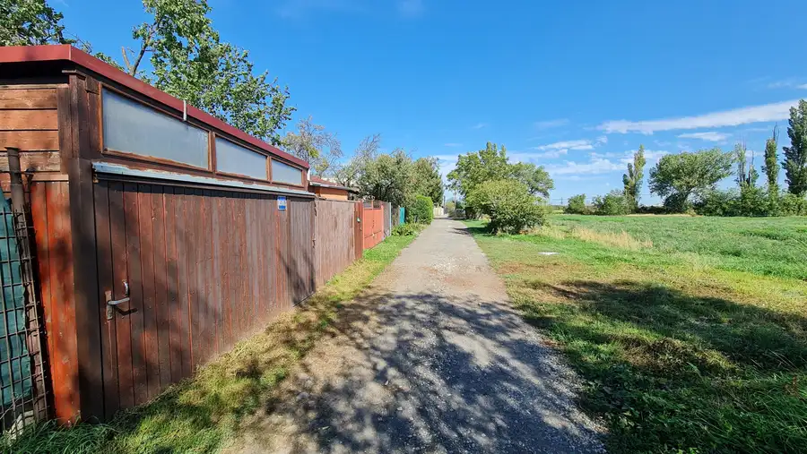
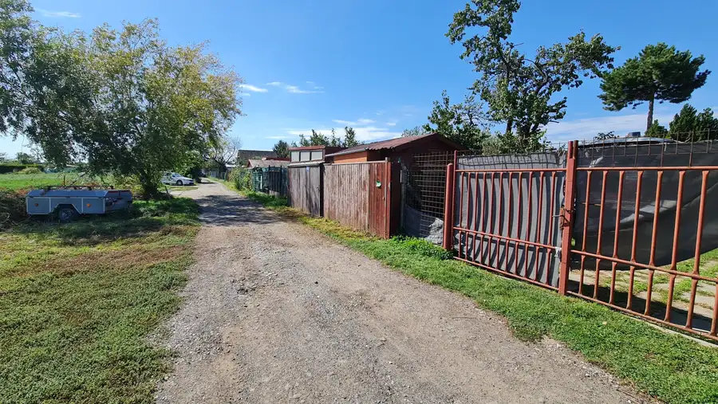
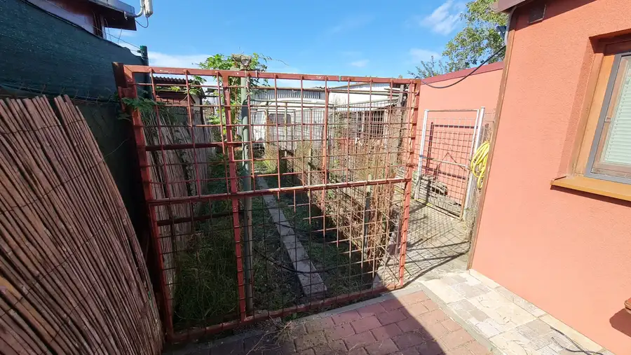
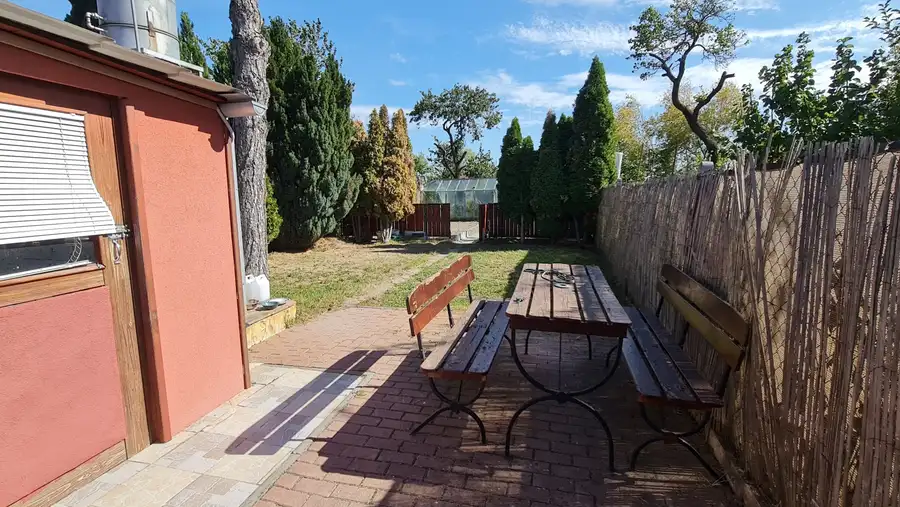
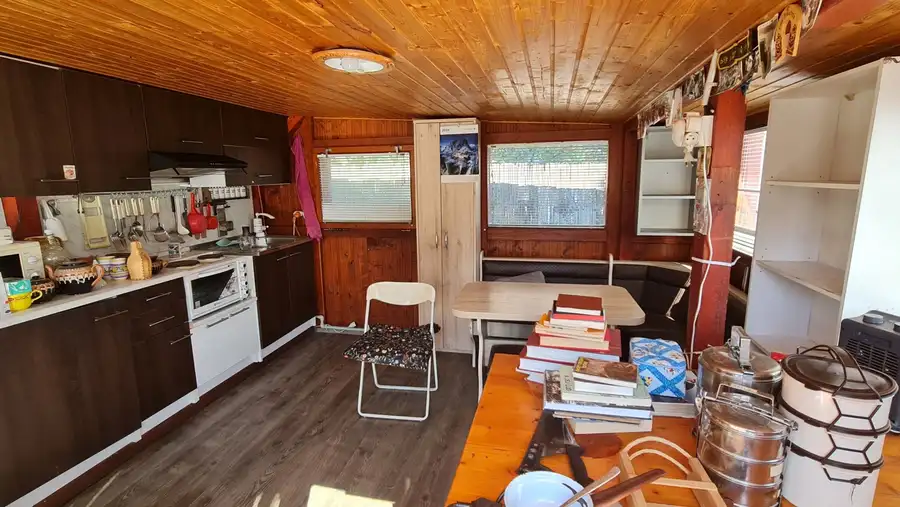
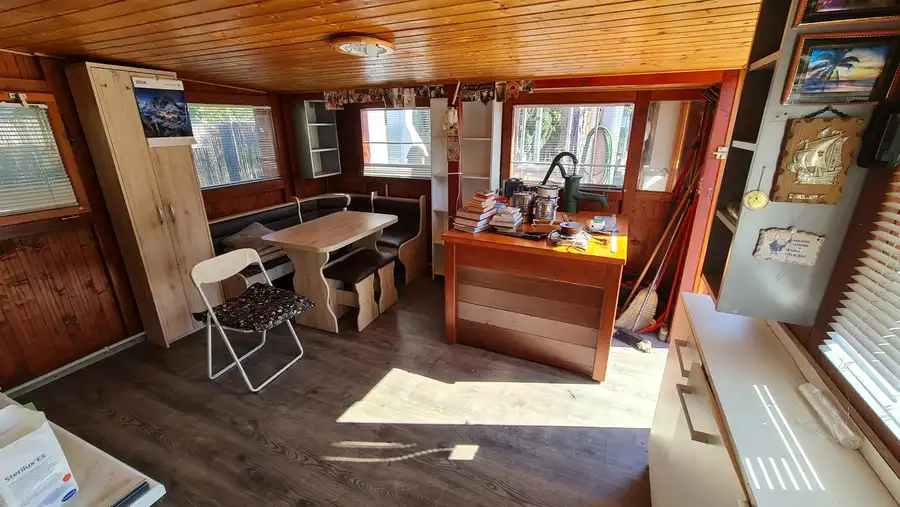
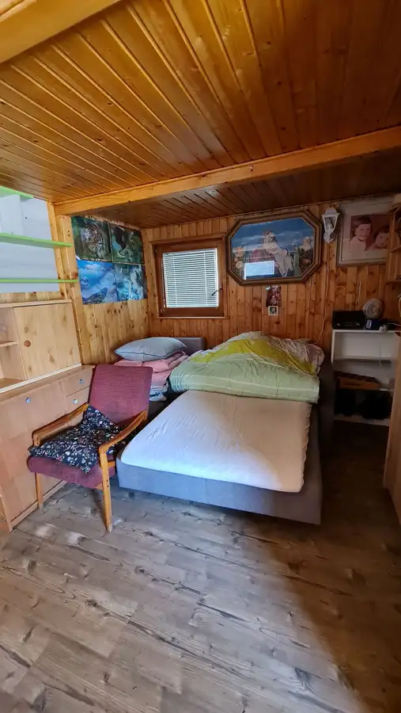
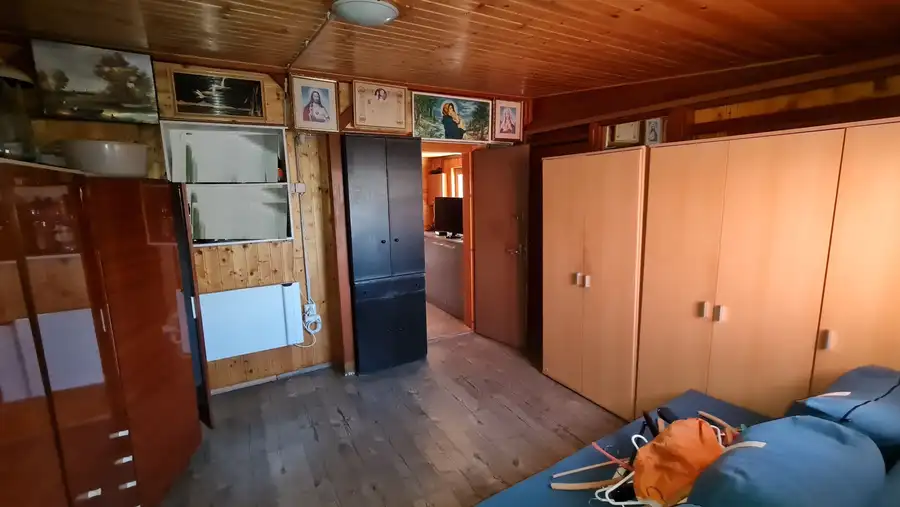
- Plocha392 m²
O nehnuteľnosti
EXKLUZÍVNE ponúkame na predaj záhradu s celoročne obývateľnou chatkou a prístreškom na auto v Bratislave-Ružinove, časti Domové role (len 450 metrov vzdušnou čiarou od Prievozu). Chatka so zastavanou plochou približne 50 m2 sa nachádza na pozemku v tvare obdĺžnika s výmerou 392 m2 (8 m x 49 m) a pozostáva z kuchyne, dvoch izieb, skladu a kúpeľne. Je pripojená na elektrickú energiu, vodu majitelia čerpajú z vlastnej studne. Pozemok je kompletne oplotený, je riešený ako malé hospodárstvo, so záhonmi, skleníkom, domčekom pre králiky a výbehom pre sliepky.Dobrý prístup, príjemní susedia, lokalita s veľkým potenciálom do budúcna, neďaleko sa nachádza známa reštaurácia Barbados.Kontakt: Mgr. Alexander Fotta, 0905/510 346, fotta.alexander@gmail.com
Parametre
- Druh
- Záhrada
- Dátum zverejnenia
- 30. 09. 2026
- Dĺžka pozemku
- 49
- Elektrina
- Na pozemku - 400 V
- Odpadové vody
- Na pozemku - Žumpa
- Plocha pozemku
- 392 m²
- Plyn
- Nedostupné
- Terén pozemku
- Rovinatý
- Typ
- Predaj
- Voda
- Na pozemku - Studňa
- Šírka pozemku
- 8
Kde to je


Mohlo by Vás zaujímať
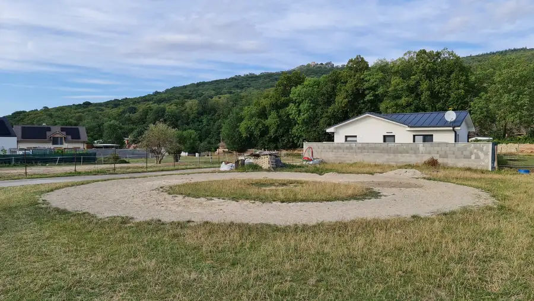
PozemokNové 229 000 €BORINKA – predaj, 839 m² stavebný pozemok vhodný na dvojdom / bývajte vedľa svojich blízkych Borinka 855 m²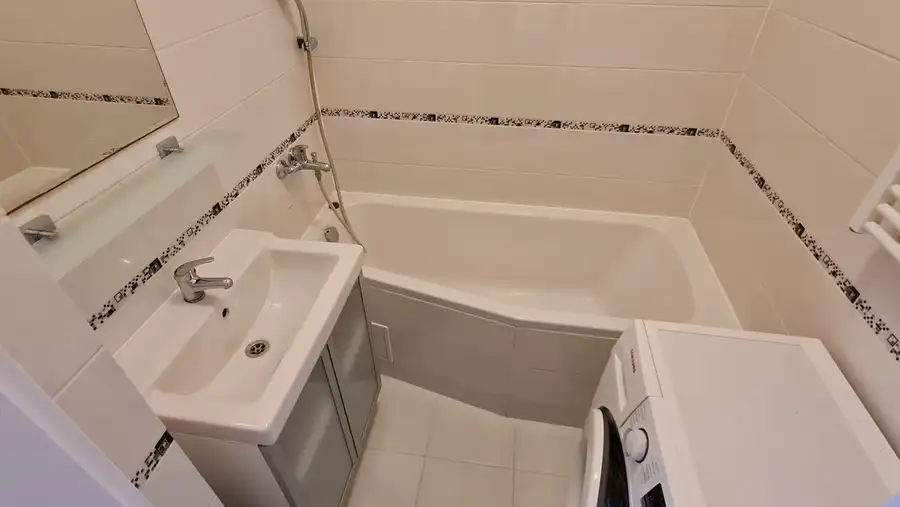
BytNové 219 900 €DÚBRAVKA - predaj, zrekonštruovaný 2-izbový byt, 53 m2, 5./8, NEPRIECHODNÉ IZBY, OBĽÚBENÁ LOKALITA Dúbravka, Bratislava 2-izbový53 m²6. podlažie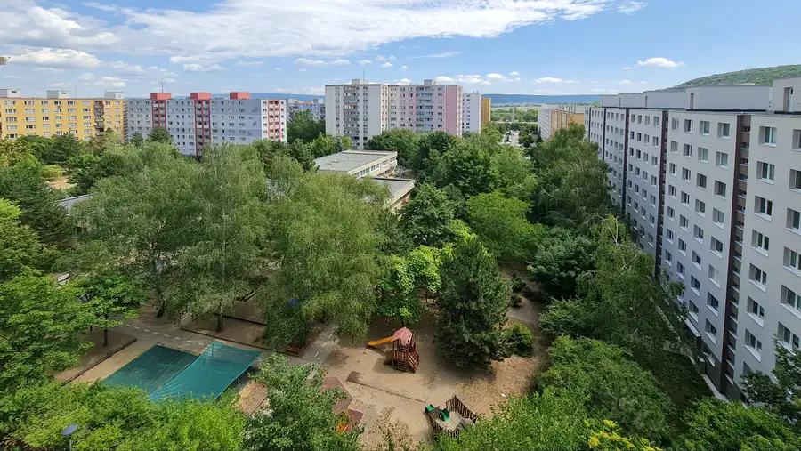
BytNové 239 900 €Devínska Nová Ves - predaj, priestranný 3-izbový byt, 79 m2, 6./12, loggia, klimatizácia, Centrum obce Devínska Nová Ves, Bratislava 3-izbový79 m²7. podlažie